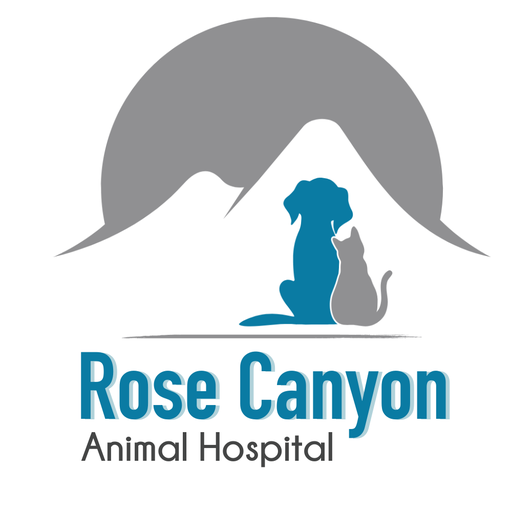
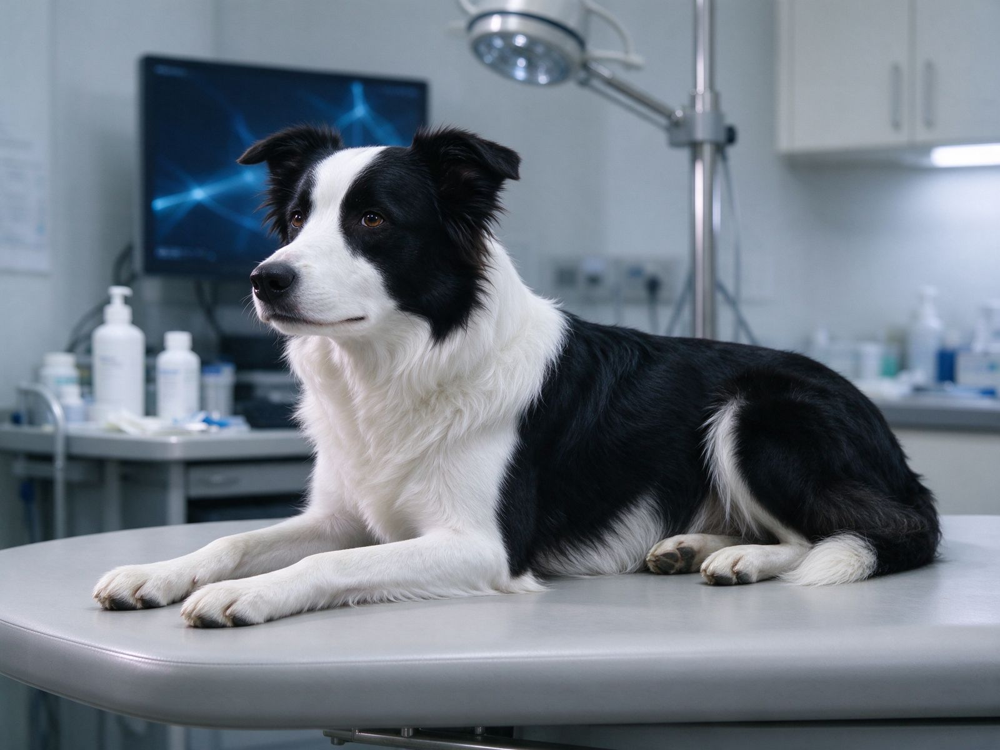

Wellness exams
Wellness exams for dogs and cats at 4295 Jutland Dr.
More about wellness exams
Rose Canyon Animal HospitalSan DiegoVeterinary care · San Diego, CA
Veterinary hospital in San Diego offering routine wellness, surgery, dentistry, and diagnostics.

IllustrationIllustrations. Your own photos go here.
Wellness exams for dogs and cats at 4295 Jutland Dr.
More about wellness examsDental care for dogs and cats at 4295 Jutland Dr.
More about dental careSurgery for dogs and cats at 4295 Jutland Dr.
More about surgeryUrgent care for dogs and cats at 4295 Jutland Dr.
More about urgent careIn-house lab for dogs and cats at 4295 Jutland Dr.
More about in-house labPick the details. We'll write the text for you to send.
Empathetic and communicative veterinary cliniciansClients frequently commend Dr. Hanks, Dr. Hoard, and Dr. Sanabria alongside the nursing team on Jutland Drive for their thorough consultations and clear explanations. Pet owners appreciate that doctors spend ample time sitting with pets to ease tension, though one client expressed regret over corporate ownership.
Comforting care for anxious petsReviewers repeatedly highlight the compassionate touch shown towards elderly pets, nervous rescues, and difficult feral cats. Owners appreciate that clinicians take a gentle approach to routine examinations, though one reviewer was dissatisfied with the heavy sedation prescribed for diagnostic x-rays.
Reliable surgical outcomes and urgent treatmentsPet parents report positive clinical results for complex surgical interventions, including CCL knee repairs, spays with gastropexy, and ear hematoma procedures. Clients value that the hospital resolves persistent infections and oral growths efficiently, helping companion animals regain mobility and health.
Themes from Google reviews, 2026-04 to 2026-10. Not quotes.
Yes, clients note that the clinic offers urgent care appointments on Sundays and weekdays for acute illnesses and sudden injuries.
Yes, pet owners report successful outcomes for cranial cruciate ligament (CCL) repairs, ear hematoma surgeries, and routine spay operations.
Today's hours are at the top of the page; the full week is on the Hours page.
4295 Jutland Dr, San Diego, CA 92117. Directions are on the Hours & location page.
We made it from rosecanyonvet.com and your Google listing. The finished site can look different: tell us what to add, remove or change (photos, prices, your team, Spanish, online booking), and we'll do it before launch.
$200 one-time, first year of hosting included, paid only once it's live on rosecanyonvet.com and you're happy
Reply to PawennPhotos are illustrations, not your business or your clients' pets; the logo is from your current site. Services and details come from your website and Google listing (November 2026); the rating and review themes come from Google reviews.